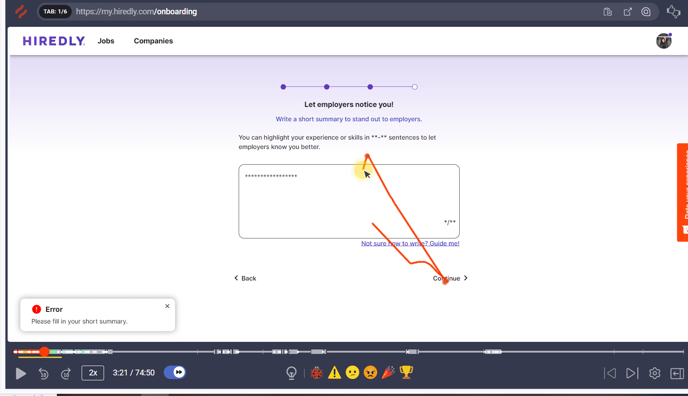
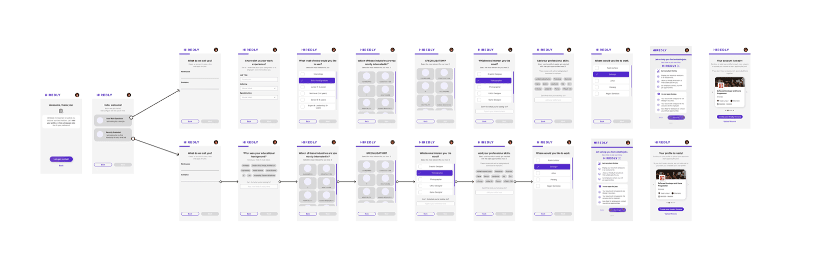
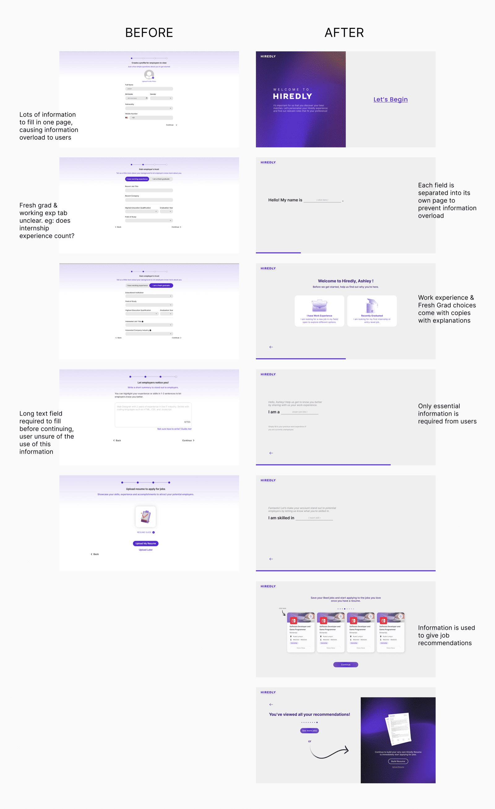

About the Company關於公司
Hiredly (previously known as WOBB) is the leading hybrid recruitment platform for junior to mid-management talent. Consisting of both a job portal and a headhunting recruitment solution, it’s a discovery platform that helps people discover any job with any employer in the market.
Hiredly(前身為 WOBB)是專為初階至中階管理人才打造的領先混合型招聘平台。結合求職網站與獵頭招聘服務,是一個幫助求職者發掘市場上各種雇主與職缺的探索平台。
Project Brief專案簡介
To design an interactive onboarding experience for the Hiredly jobseeking website that is engaging and informative to jobseekers on 3 breakpoints (desktop, tablet & mobile).
為 Hiredly 求職網站設計一套互動式新手導覽體驗,在電腦、平板與手機這 3 種螢幕尺寸上,都能為求職者提供有趣且實用的資訊。
The Challenges挑戰
- Through user research & analysis, high bounce rates were determined at different stages of the onboarding experience.
- This caused insufficient information collected from users and therefore an inability to provide the best job recommendations to jobseekers, lowering the retention rate.
- 透過使用者研究與分析,發現新手導覽體驗的不同階段都出現偏高的跳出率。
- 這導致從使用者身上收集到的資訊不足,因而無法為求職者提供最合適的職缺推薦,降低了留存率。

The Objectives目標
- To simplify the onboarding experience and ensure users are able to immediately apply for jobs after.
- To gather enough user information to curate a personalised recommended job list.
- 簡化新手導覽體驗,確保使用者完成後能立即申請職缺。
- 收集足夠的使用者資訊,以打造個人化的推薦職缺清單。
The Process執行過程
Brainstorming腦力激盪
We held a brainstorming session, with key discussions focusing on:
我們舉辦了一場腦力激盪會議,主要討論聚焦於:
- Identifying Pain Points
- Conducting Competitive Analysis
- Determining Design Direction
- Researching Insights
- 找出痛點
- 進行競品分析
- 確立設計方向
- 研究洞察

Initial User Flow初步使用者流程
We then came out with a first version of the user flow.
接著,我們產出了第一版的使用者流程。

Final User Flow最終使用者流程
After several rounds of discussions and requirement changes, we finalised the user flow.
經過多輪討論與需求變更後,我們確定了最終的使用者流程。

Wireframe線框稿

Final Mockups最終視覺稿
User with Work Experience有工作經驗的使用者

Fresh Graduate應屆畢業生

Before & After前後對比
